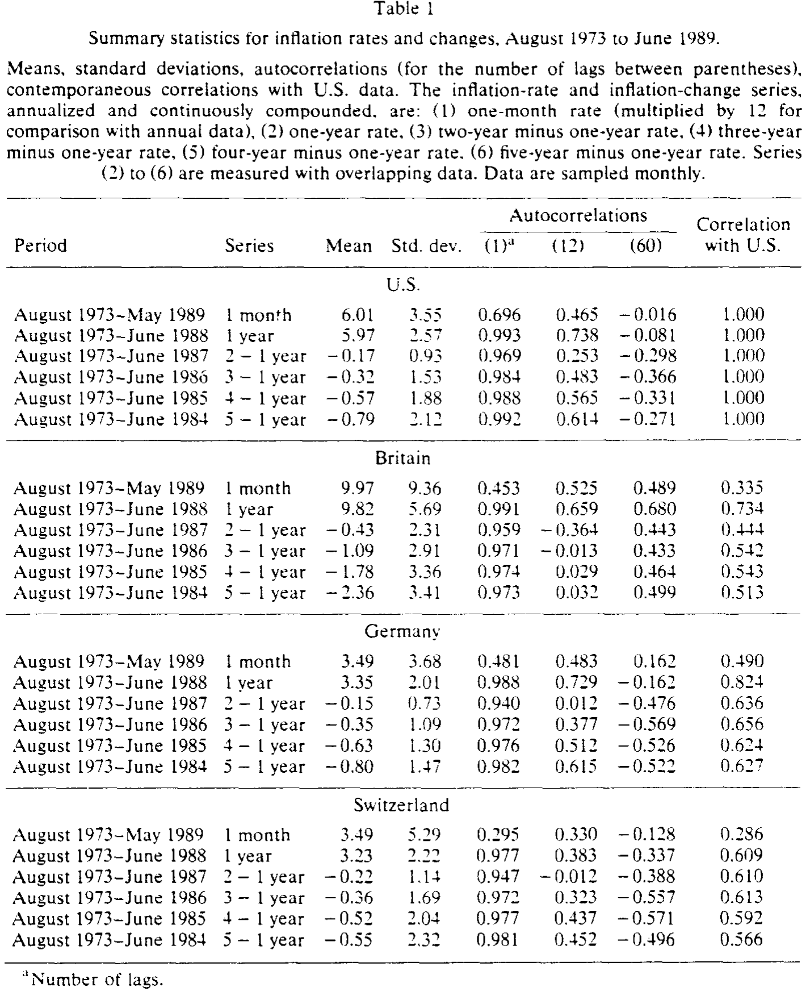
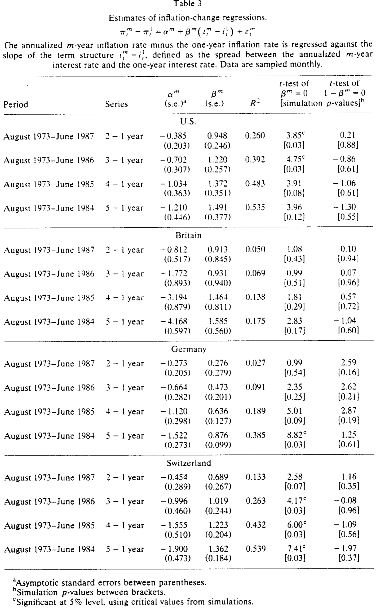
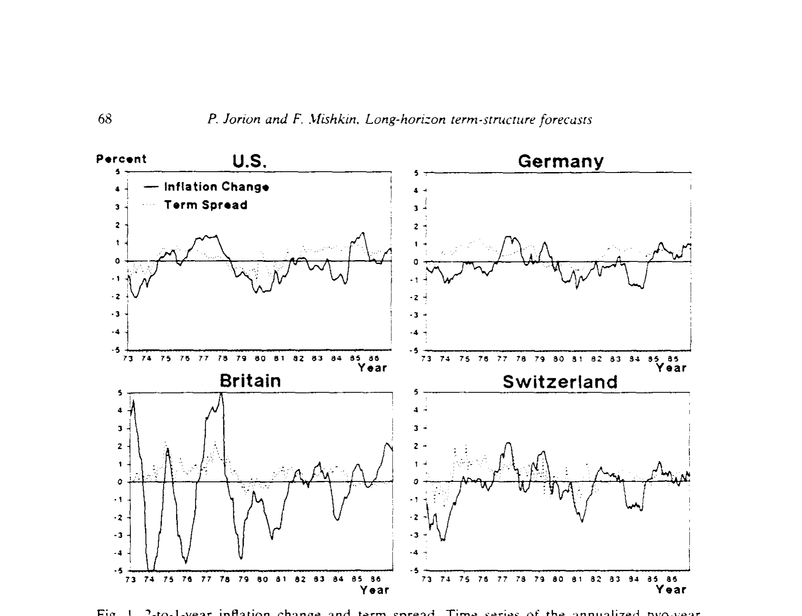
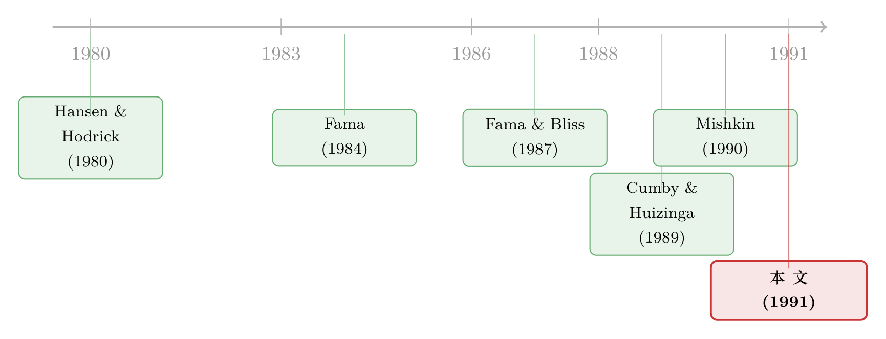

向上的收益率曲线，到底在预言通胀，还是在预言利率？
本文读的是 Jorion & Mishkin (1991, Journal of Financial Economics)：把「收益率曲线斜率能预测什么」这件事，从美国一国搬到了英国、西德、瑞士四国一起检验。结论分成对照鲜明的两半——期限结构对未来通胀变化有很强的预测力（尤其在长期限），但对未来一年期利率变化的预测力要弱得多，只有最长的五年期才显著。而且作者坚持用蒙特卡洛模拟的小样本临界值做推断，因为用渐近分布会把显著性「夸大」到离谱的地步。
1 一个让央行心动、又让央行不安的问题
先从一个几乎人人都听过的说法讲起：当一国的收益率曲线（yield curve）向上倾斜——长期利率高于短期利率——人们往往把它读成「市场预期未来通胀会更高」。如果这个读法是对的，那它的政策含义就大得惊人：央行只要盯着收益率曲线的斜率，就能从市场价格里「读」出未来的通胀路径，并据此调整货币政策。
这是个诱人的故事。可它也让人不安。因为「斜率预言通胀」这件事，几乎所有证据都来自美国（关于远期利率到底在预言什么，可参见《利率走过的那道长弧：远期利率预言的，究竟是什么？》）。Fama (1984)、Fama and Bliss (1987) 发现远期—即期利差能预测即期利率的变化，长期限尤其强；Fama (1990) 和 Mishkin (1990a, 1990b) 则报告，期限结构的斜率与未来通胀的变化相关。
但这些研究有一个共同的软肋：它们几乎都用一段三十年左右的美国月度数据。问题是，长期限预测天然要用「重叠样本」（overlapping forecasts）——你拿这个月起算的五年通胀，和下个月起算的五年通胀，重叠了四年十一个月。重叠让相邻观测高度相关，于是「有效样本」远比名义样本小，结果的稳定性很难评估。换句话说，我们其实不太确定，美国那条漂亮的「斜率—通胀」关系，到底是一条经济规律，还是一段特定历史时期的巧合。
接着，一个自然的问题就是：怎么检验它的稳健性？ 作者给出的答案干净利落——换一批国家。
2 为什么偏偏是英、德、瑞？
这正是本文识别思路里最聪明的一笔。检验「美国结论是不是普适」，最有说服力的办法不是再多挖几年美国数据，而是去看那些通胀过程截然不同的国家。
英国是高通胀、且高波动的代表（样本期年均通胀约 10%）；西德和瑞士则是低通胀的典范（约 3.5%）；美国居中（约 6%）。如果「斜率预言通胀」真是一条规律，它就该在这三种迥异的通胀环境里都站得住脚。反过来，若它只在美国成立，那多半是数据挖出来的幻觉。
为此，作者亲手构造了一套此前并不存在的数据集：英、德、瑞三国一到五年期的利率。美国即期利率取自 Shiller and McCulloch (1987) 的样条拟合并更新到 1989 年 6 月；英国金边债（gilt）用同样的方法对《金融时报》报价拟合贴现函数；西德联邦债（bund）的即期利率由 Bundesbank 的固定期限收益率反推；瑞士因为政府债市场太小（1989 年末存量仅约 70 亿美元，而同期美国国债市场约 1.53 万亿美元），只能用欧洲瑞郎（Euro Swiss franc）利率代替。样本是 1973 年 8 月到 1989 年 6 月的月度数据——起点选在浮动汇率开始之后，也是四国数据齐备的第一个时点。

Table 1
3 两条回归，和它们各自要回答的问题
然后，要把「期限结构含有什么信息」翻译成可估计的东西。作者沿用 Mishkin (1990a, 1990b, 1991) 的设定，跑的核心是通胀变化回归（inflation-change regression）：
$$\pi^m_t - \pi^1_t = \alpha_m + \beta^m\,(i^m_t - i^1_t) + \varepsilon^m_t$$
左边是从 \(t\) 到 \(t+m\) 的年化 \(m\) 年期通胀率，减去一年期通胀率；右边的解释变量 \(i^m_t - i^1_t\) 是期限结构的斜率，即 \(m\) 年期利率与一年期利率之差。全文所有利率、通胀率都用连续复利、年化表示。
真正关键的一步，是看懂斜率系数 \(\beta^m\) 的两重含义——这也是这篇论文最容易被读者跳过、却最值得细品的地方：
- \(\beta^m\) 显著不为 0：说明名义期限结构里含有未来通胀的信息，且名义与实际期限结构的斜率不是一对一同步变动的；
- \(\beta^m\) 显著不为 1：说明实际利率期限结构的斜率不是常数，于是名义期限结构里还含有关于实际期限结构的信息。
记住这把「双刻度尺」，下一节的结果才有味道。
作为对照，作者还跑了 Fama (1983)、Fama and Bliss (1987) 那条以即期利率变化为对象的回归：
$$i^1_{t+m-1} - i^1_t = \alpha_m + \delta^m\,(f^m_t - i^1_t) + \varepsilon^m_t$$
其中 \(f^m_t\) 是由 \(m-1\) 期和 \(m\) 期即期利率推出的一年期远期利率。\(\delta^m\) 显著不为 0，意味着期限结构含有未来即期利率变化的信息；\(\delta^m\) 显著不为 1，则是对期限结构预期假说（expectations hypothesis）的拒绝。
更妙的是，这两条回归并非各说各话。因为 \(t+m-1\) 时观测到的一年期即期利率，可以拆成一个「事后」一年期通胀分量加一个「事后」一年期实际利率分量。于是 Fama (1990) 式的分解把即期回归切成两半：
$$\pi^1_{t+m} - \pi^1_t = \gamma'_m + \delta'^m(f^m_t - i^1_t) + \varepsilon'^m_t$$
$$rr^1_{t+m} - rr^1_t = \gamma''_m + \delta''^m(f^m_t - i^1_t) + \varepsilon''^m_t$$
两式相加正好还原即期回归，所以 \(\delta'^m + \delta''^m = \delta^m\)。这就把「斜率预言的到底是通胀还是实际利率」摆到了同一张账本上。
4 一个绕不开的坑：渐近分布在「撒谎」
但在看结果之前，必须先解决一个棘手的计量问题——否则所有 \(t\) 值都是假的。
重叠预测会让误差项带上很强的序列相关。具体说，\(m=5\) 年时，即期回归的重叠会诱导出一个 \(\text{MA}(12(m-1)-1)=\text{MA}(47)\) 过程；而通胀回归的误差因为是一年后才实现的，服从 \(\text{MA}(12m-1)\)，即 \(m=5\) 时是 \(\text{MA}(59)\)。普通 OLS 标准误在这里完全失效。作者先用 Cumby and Huizinga (1989) 的统计量检验「重叠之外是否还有额外序列相关」，结论是没有；随后用 Hansen and Hodrick (1980) 的方法、叠加 White (1980)/Hansen (1982) 的条件异方差修正与 Newey and West (1987) 的正定化处理，得到修正后的标准误。
于是反转出现了。Mishkin (1990b) 早就指出：这些修正后的标准误虽然渐近有效，在小样本里却会严重误导，尤其是「用十五年数据去估五年预测」这种情形。作者的蒙特卡洛（Monte Carlo）模拟把这个偏差量化得触目惊心——
若沿用渐近分布的 5% 临界值，在原假设成立时，检验会远远过度拒绝：\(m=2\) 年时大约 20% 的时间错误拒绝，\(m=5\) 年时常常高达 50%。模拟得到的真实 5% 临界值，\(m=2\) 时约为 3.5，\(m=5\) 时约为 5.0——远高于教科书里那个 1.96。
所以本文里每一个检验统计量的临界值和 \(p\) 值，都来自蒙特卡洛模拟的有限样本分布，而不是渐近分布。这是一个常被忽视、却足以推翻别人结论的细节（关于「长期回归会凭空看见根本不存在的东西」，可参见《回归用得越「长」，越容易看见根本不存在的东西》）。
5 主结果：四国都点头，而且越长越准
铺垫到这里，结果反而变得简单了。
先看美国。\(\beta^m\) 从 \(m=2\) 到 \(m=5\) 分别是 0.948、1.220、1.372、1.491，其中 \(m=2\) 和 \(m=3\) 在 5% 水平显著，\(m=4\) 也几乎显著（\(p\) 值 0.08）。更有说服力的是 \(R^2\) 随期限单调上升——从 26% 一路涨到 53%。而且没有任何一个 \(\beta^m\) 显著不等于 1。
回到第 3 节那把双刻度尺：\(\beta^m\) 显著不为 0、却不显著异于 1，意味着——长期限的名义期限结构含有未来通胀的信息，却几乎不含关于实际期限结构的信息（实际利率期限结构的斜率近似是常数）。这就是全文要反复讲透的那一个核心。

Table 3
接着看其余三国，故事惊人地一致：
- 瑞士：\(m=3,4,5\) 的 \(\beta^m\) 在
5%显著，\(m=2\) 在10%显著；\(R^2\) 从13%升到54%，\(\beta^m\) 从0.689升到1.362。 - 西德：\(m=5\) 在
5%显著、\(m=4\) 在10%显著，更短期限则系数小且不显著；但 \(R^2\) 在 \(m=5\) 时也达到了38%。 - 英国：大多数斜率系数都接近 1，但估计的标准误远高于其他国家，所以没有一个显著。作者诚实地把原因归到检验的低功效（power）——英国预测期限远大于观测间隔，数据重叠更严重。
四国的 \(\beta^m\) 都无法被拒绝等于 1。把它们放在一起，作者还做了一个跨国相等性的卡方检验，发现没有一个统计量显著——也就是说，无法拒绝「四国期限结构所含的信息是相似的」这一假设。一条本来只在美国被观察到的关系，在通胀环境天差地别的四个国家里都站住了。
图 1 把这件事画得很直观：纵轴尺度对四国统一，于是英国通胀的剧烈波动和德国通胀的稳定一目了然；美国的期限结构拟合得相当好。

Figure I: Z-to-l-year inflation change and term spread. Time series of the annualized two-year
6 被忽略的另一半：利率变化预测得并不好
到这里，如果只讲「斜率预言通胀」，那这篇论文就成了一篇皆大欢喜的稳健性报告。但它真正有分量的地方，恰恰在于它老老实实地报告了对照的、不那么漂亮的一半。
当把预测对象换成未来一年期即期利率的变化（第二条回归），期限结构的预测力就明显减弱了。如摘要所言：只有在最长的五年期，利率变化才有显著的可预测性。换句话说——
把同一条收益率曲线斜率拆开看：它对通胀变化是个好的预报员，对名义利率变化却乏善可陈。结合分解式 \(\delta'^m + \delta''^m = \delta^m\)，这等于在说，斜率所携带的那点关于未来名义利率的信息，主要来自通胀那一支，而非实际利率那一支。
这一长一短的对照，还能从另一个维度看清楚。把本文的长期限结果与 Mishkin (1991) 的短期限（12 个月及以内）结果对照：
| 短期限（≤12 个月） | 长期限（2–5 年，本文） | |
|---|---|---|
| \(\beta^m\) 是否显著异于 0 | 否（系数小、不显著） | 是（长期限显著） |
| \(\beta^m\) 是否显著小于 1 | 是 | 否 |
| 含未来通胀的信息 | 弱 | 强 |
| 含实际期限结构的信息 | 有 | 几乎没有 |
| \(R^2\) | 远低于 0.10 |
随 \(m\) 上升至 0.5 左右 |
短期限和长期限，竟是两种几乎相反的图景。这也正解释了为什么 Table 3 里 \(R^2\) 会随 \(m\) 一路递增——期限越长，名义期限结构里「关于通胀」的信号越纯。
7 文献脉络
把这条线索捋一捋。早期的源头是 Fama (1984) 关于期限结构信息含量的研究，随后 Fama and Bliss (1987) 证明长期限远期利率含有即期利率变化的信息，Fama (1990) 进一步把利率、通胀、实际收益的预测统一到期限结构上。与此并行，Mishkin (1990a, 1990b, 1991) 把焦点从「利率」转向「通胀」，系统地问「期限结构究竟告诉了我们多少关于未来通胀的事」。

本文 Jorion and Mishkin (1991) 处在这条线索的两个交汇点上：一是把 Mishkin 的通胀回归从美国扩展到多国，用通胀过程的跨国异质性做了一次硬核的稳健性检验；二是在方法上把 Hansen and Hodrick (1980)、White (1980)、Hansen (1982)、Newey and West (1987) 的标准误修正，连同 Cumby and Huizinga (1989) 的序列相关检验，统统嵌进一个蒙特卡洛小样本推断框架里——而这恰恰是同期许多长期限回归研究最薄弱的一环（关于通胀如何写进整条利率曲线，可参见《通胀这道暗税，如何写歪了整条利率曲线》；关于收益率曲线「反常」与最短端，可参见《利率曲线的「反常」，其实藏在最短的那两年里》）。
8 评论与延伸（Q&A + 研究方向）
(a) 几个可能的疑问
Q：\(\beta^m\) 显著不为 0、却不显著异于 1，这两件事放在一起到底意味着什么？
意味着在长期限上，名义期限结构的斜率主要在反映未来通胀的变化，而实际利率期限结构的斜率近似是常数。直觉是：你看到的那段「向上倾斜」，长端几乎全是通胀预期在动，实际期限结构没怎么变。这正好和短期限相反——短期限上 \(\beta^m\) 显著小于 1，说明那里名义曲线主要在讲实际利率的故事。
Q：把瑞士的政府债换成欧洲瑞郎利率，会不会污染结论？
这是个真实的隐忧，因为瑞士国债市场太小（存量仅约 70 亿美元）。作者的缓冲是：他们对美元和德国马克同时有政府债和欧洲市场两套利率，验证了换用欧洲市场利率不改变结论。这算是一个间接但合理的稳健性背书，但严格说，瑞士这一国的结果仍要打个折扣。
Q：为什么唯独英国「系数对了、显著性没了」？
不是关系不在，而是检验功效太低。英国通胀本身波动极大（部分还来自增值税开征、房贷利息计入零售物价指数等口径扭曲），加上长期限预测的数据重叠更严重，估计的标准误被推得很高。佐证是：英国长期限回归的 \(R^2\) 反而高于其短期限结果，且随期限上升。所以更可能是「测不准」，而非「没有」。
Q：用蒙特卡洛临界值，是不是把门槛抬得太高、反而埋没了真信号？
恰恰相反，这是在纠偏。模拟显示渐近分布会让原假设下的拒绝率高达
20%–50%，也就是大量「显著」其实是假阳性。把临界值从1.96提到3.5–5.0，是在还原真实的第一类错误率。能在这么严的尺子下依然显著，结论才更可信。
Q：「斜率预言通胀」能直接拿来当货币政策的指针吗？
作者自己留了余地。一旦央行真的开始依据斜率行事，货币政策的转变本身就可能改变「期限结构—通胀」的长期关系——这是典型的卢卡斯批判式担忧。所以这篇论文说的是「斜率含有通胀信息」，而非「央行照着斜率操作就万无一失」。
Q：这篇论文跟「期限结构预期假说」是什么关系？
它没有直接、全面地检验预期假说。即期利率回归里 \(\delta^m\) 显著不为 1 才对应拒绝预期假说，但作者明确指出，在通胀回归里检验 \(\beta^m=1\) 另有独立的经济含义（实际期限结构斜率是否为常数），不要把两者混为一谈。
(b) 几个可能的研究问题与提案
1. 把检验搬到「外资持有结构」剧变的国家
【经济故事】若一国国债的边际定价者从本国机构变成外资，期限结构里嵌入的通胀预期、风险溢价都可能被重写，「斜率—通胀」关系或随之松动。【可行性】中。需要分国别的国债期限结构数据加外资持有比例（如各国央行/IMF 的持有人结构），用持有结构的外生变动做识别；难点在于持有结构变化往往与宏观环境同步，内生性不易剥离。
2. 公司债期限结构里有没有同样的「通胀信号」？
【经济故事】本文做的是无（低）违约的政府债。公司债斜率同时混入信用利差与流动性溢价，那么它对未来通胀的预测力是被增强还是被稀释？这能把宏观与信用市场连起来。【可行性】中。美国有较长的公司债收益率曲线数据，但需要先把信用与流动性成分剥离（可借助同评级 CDS 或匹配国债），识别上要小心共同的宏观驱动。
3. 央行真的开始盯斜率之后，关系是否漂移？
【经济故事】直接回应作者自己的卢卡斯批判式担忧：在通胀目标制（inflation targeting）前后，「斜率—通胀」回归的系数是否发生结构性变化？【可行性】高。各国采纳通胀目标制的时点是清晰的、近乎外生的政策事件，可用断点或事件式设计比较前后 \(\beta^m\) 与 \(R^2\)，数据也相对易得。
4. 用现代小样本/自助法重估这套老回归
【经济故事】本文的蒙特卡洛在 1991 年是前沿。如今有更长样本与更稳健的（block/wild）自助法，重估四国乃至更多国家，能检验这套结论是否经得起方法升级。【可行性】高。纯方法+数据扩展，doable；主要价值在于把「渐近会过度拒绝」这件事在更广样本上系统钉死。
9 我的判断
这篇论文的贡献有两层，且都很扎实。第一层是识别上的：用通胀过程极度异质的四国，给「美国式」结论做了一次真正意义上的样本外检验，并且把那个常被一句话带过的「斜率预言通胀」拆成了对照鲜明的两半——通胀变化可预测、且越长越准，利率变化却只在最长端勉强显著。第二层是方法上的：它没有满足于渐近标准误，而是用蒙特卡洛把小样本的过度拒绝量化出来，这种诚实，在长期限重叠回归泛滥的年代里尤其难得。
对识别，我有两点保留。其一是瑞士用欧洲瑞郎利率替代国债，虽有美元/马克的交叉验证，但终究隔了一层。其二是英国的「不显著」被归因于低功效——这个解释合理，却也提醒我们：四国一致的结论里，真正提供独立信息的其实只有美、德、瑞三国，英国更像是「证据不足」而非「证据相反」。
后续我最想看到的，是把这套框架接到持有人结构和信用市场上去：当国债的边际定价者变了，或者把对象换成带违约风险的公司债，那条「长期限名义斜率近似只反映通胀、实际期限结构斜率为常数」的优美结论，还成不成立？这恰好是连接宏观利率与信用、外资两条线索的天然接口。
参考文献
- Cumby, R. and J. Huizinga (1989). Testing for Autocorrelation Structure of Disturbances in Ordinary Least Squares and Instrumental Variables Regressions. Working paper, New York University.
- Engle, R. (1982). Autoregressive Conditional Heteroskedasticity with Estimates of the Variance of United Kingdom Inflation. Econometrica 50(4), 987–1007.
- Fama, E. F. (1984). The Information in the Term Structure. Journal of Financial Economics 13(4), 509–528.
- Fama, E. F. (1990). Term Structure Forecasts of Interest Rates, Inflation and Real Returns. Journal of Monetary Economics 25(1), 59–76.
- Fama, E. F. and R. Bliss (1987). The Information in Long-Maturity Forward Rates. American Economic Review 77(4), 680–692.
- Hansen, L. (1982). Large Sample Properties of Generalized Method of Moments Estimators. Econometrica 50(4), 1029–1054.
- Hansen, L. and R. Hodrick (1980). Forward Exchange Rates as Optimal Predictors of Future Spot Rates. Journal of Political Economy 88(5), 829–853.
- Huizinga, J. and F. S. Mishkin (1984). Inflation and Real Interest Rates on Assets with Different Risk Characteristics. Journal of Finance 39(3), 699–712.
- Jorion, P. and F. S. Mishkin (1991). A Multicountry Comparison of Term-Structure Forecasts at Long Horizons. Journal of Financial Economics 29(1), 59–80.
- Mishkin, F. S. (1990a). What Does the Term Structure Tell Us About Future Inflation? Journal of Monetary Economics 25(1), 77–95.
- Mishkin, F. S. (1990b). The Information in the Longer-Maturity Term Structure About Future Inflation. Quarterly Journal of Economics 105(3), 815–828.
- Mishkin, F. S. (1991). A Multi-Country Study of the Information in the Term Structure About Future Inflation. Journal of International Money and Finance, forthcoming.
- Newey, W. and K. West (1987). A Simple, Positive Semi-Definite, Heteroskedasticity and Autocorrelation Consistent Covariance Matrix. Econometrica 55(3), 703–708.
- Shiller, R. and J. H. McCulloch (1987). The Term Structure of Interest Rates. NBER Working Paper.
- White, H. (1980). A Heteroskedasticity-Consistent Covariance Matrix Estimator and a Direct Test for Heteroskedasticity. Econometrica 48(4), 817–838.